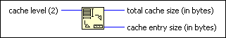
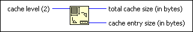

Data Cache Size Function
Owning Palette: CPU Information Functions
Requires: Base Development System
Returns the characteristics of the cache level you specify.

 Add to the block diagram Add to the block diagram |
 Find on the palette Find on the palette |
Owning Palette: CPU Information Functions
Requires: Base Development System
Returns the characteristics of the cache level you specify.

| Add to the block diagram |
Find on the palette |
You can use the Application:Target:Data Cache Entry Sizes and Application:Target:Data Cache Sizes properties to programmatically obtain information from a LabVIEW application running on a remote computer or target about the system on which the application runs.
National Instruments recommends that you use the Data Cache Size function rather than these properties to return information from the local computer.